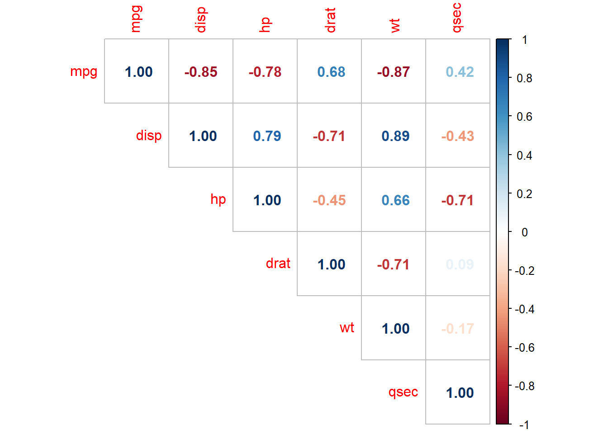
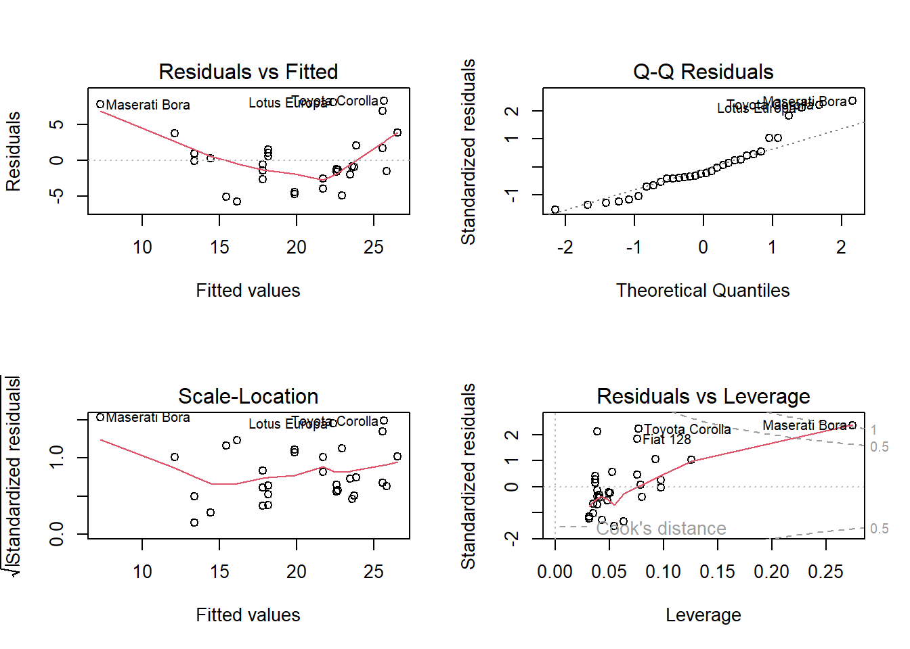
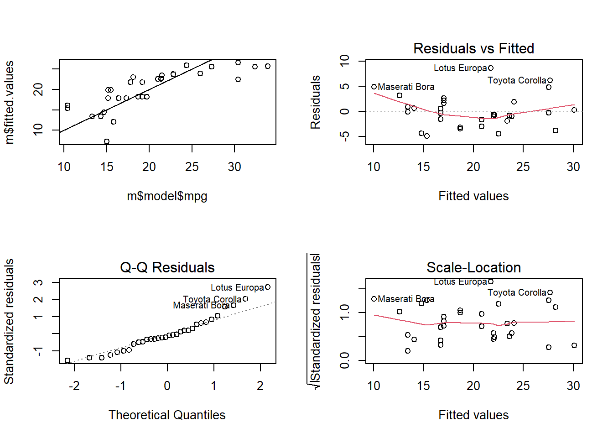
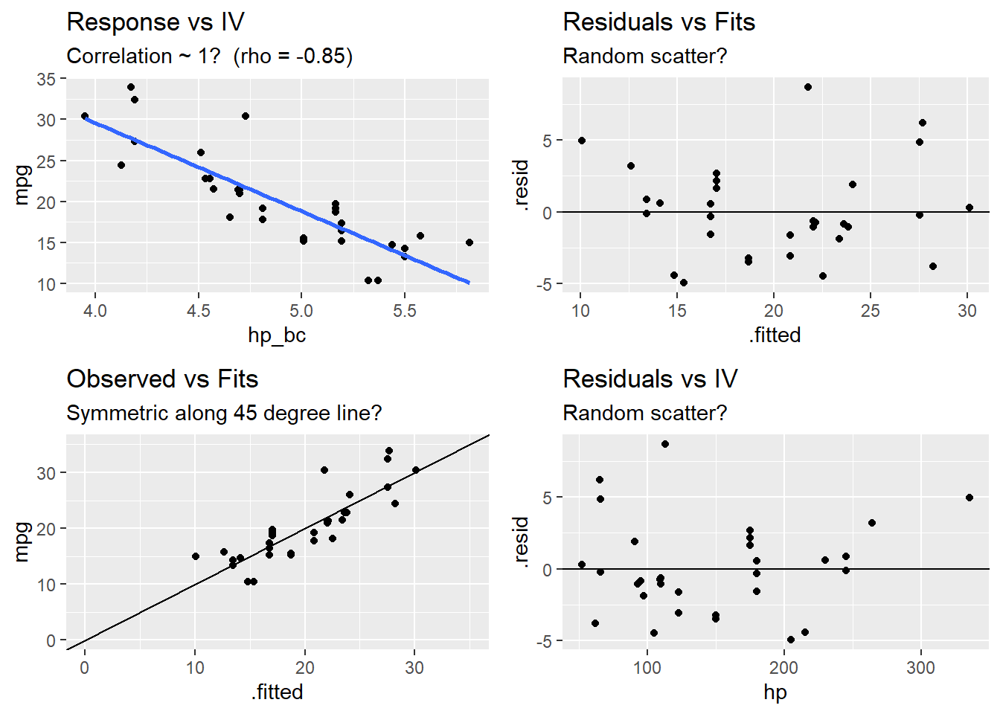
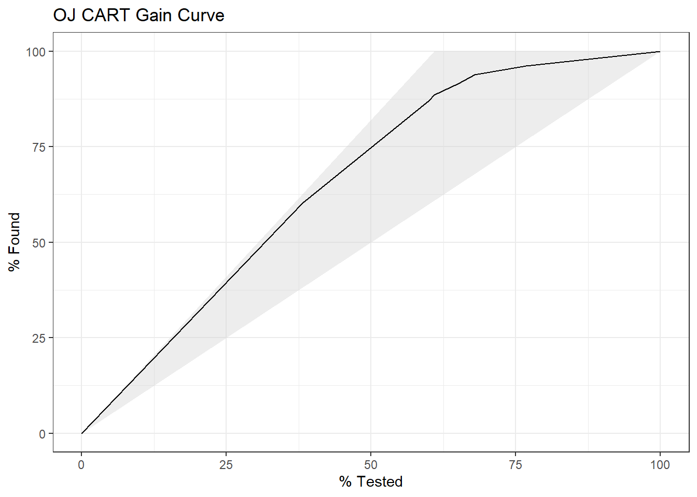
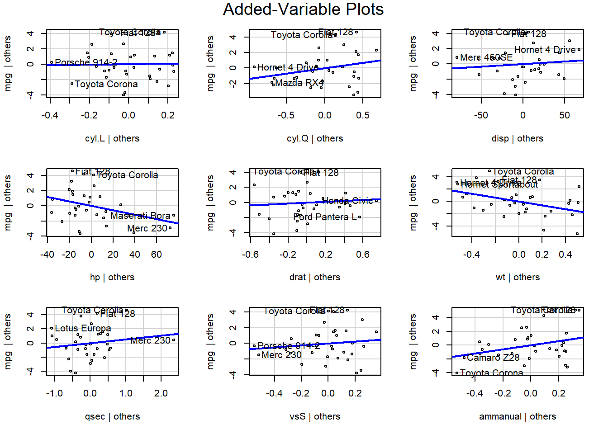
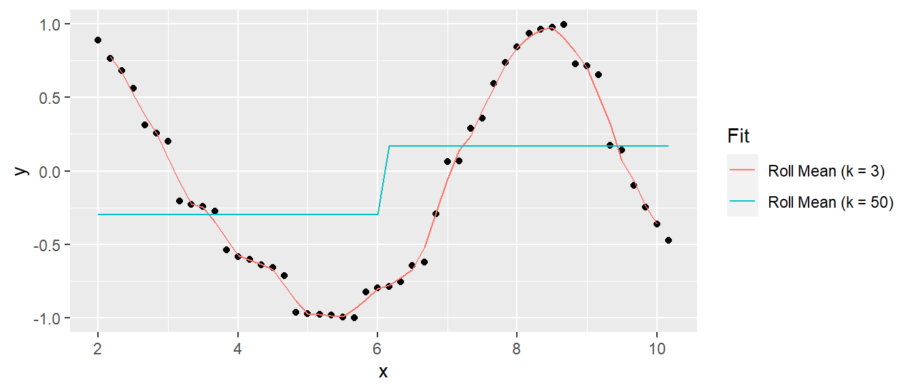
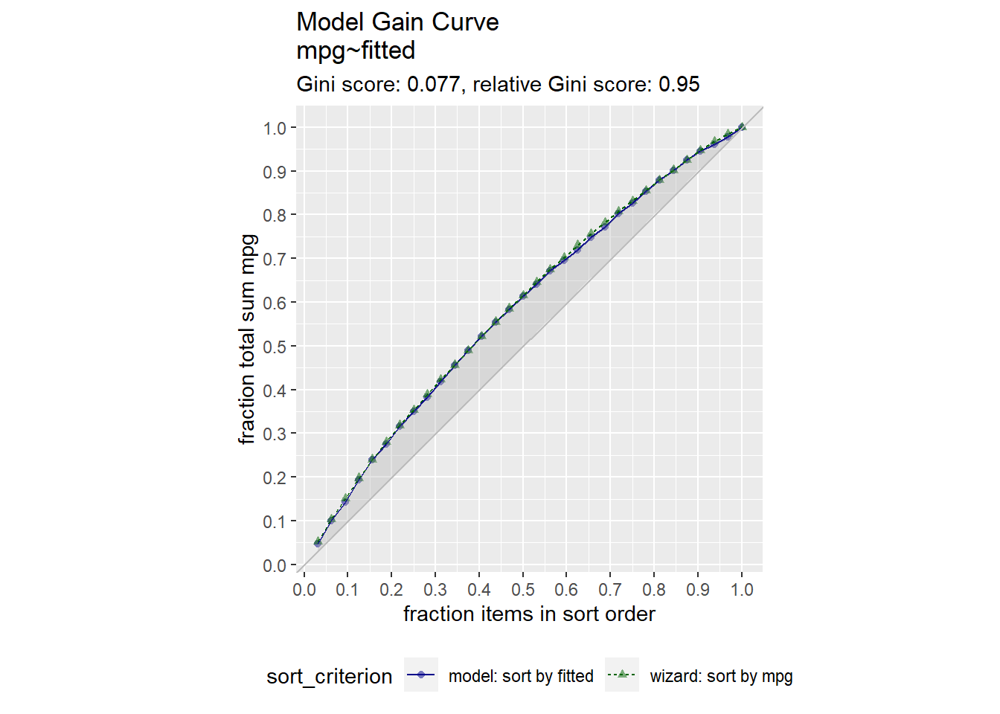

Chapter 1 Ordinary Least Squares
## Warning: package 'caret' was built under R version 4.3.1## Warning: package 'Metrics' was built under R version 4.3.1## Warning: package 'corrplot' was built under R version 4.3.1## Warning: package 'gridExtra' was built under R version 4.3.1## Warning: package 'car' was built under R version 4.3.1## Warning: package 'carData' was built under R version 4.3.1## Warning: package 'AppliedPredictiveModeling' was built under R version 4.3.1## Warning: package 'e1071' was built under R version 4.3.1These notes cover linear regression.
1.1 Linear Regression Model
The population regression model \(E(Y) = X \beta\) summarizes the trend between the predictors and the mean responses. The individual responses are assumed to be normally distributed about the population regression, \(y_i = X_i \beta + \epsilon_i\) with varying mean, but constant variance, \(y_i \sim N(\mu_i, \sigma^2).\) Equivalently, the model presumes a linear relationship between \(y\) and \(X\) with residuals \(\epsilon\) that are independent normal random variables with mean zero and constant variance \(\sigma^2\). Estimate the population regression model coefficients as \(\hat{y} = X \hat{\beta}\), and the population variance as \(\hat{\sigma}^2\). The most common method of estimating the \(\beta\) coefficients and \(\sigma\) is ordinary least squares (OLS). OLS minimizes the sum of squared residuals from a random sample. The individual predicted values vary about the actual value, \(e_i = y_i - \hat{y}_i\), where \(\hat{y}_i = X_i \hat{\beta}\).
The OLS model is the best linear unbiased estimator (BLUE) if the residuals are independent random variables normally distributed with mean zero and constant variance. Recall these conditions with the LINE pneumonic: Linear, Independent, Normal, and Equal.
Linearity. The explanatory variables are each linearly related to the response variable: \(E(\epsilon | X_j) = 0\).
Independence. The residuals are unrelated to each other. Independence is violated by repeated measurements and temporal regressors.
Normality. The residuals are normally distributed: \(\epsilon|X \sim N(0, \sigma^2I)\).
Equal Variances. The variance of the residuals is constant (homoscedasticity): \(E(\epsilon \epsilon' | X) = \sigma^2I\)
Additionally, you should make sure you model has “little” or no multicollinearity among the variables.
1.2 Parameter Estimation
There are two model parameters to estimate: \(\hat{\beta}\) estimates the coefficient vector \(\beta\), and \(\hat{\sigma}\) estimates the variance of the residuals along the regression line.
Derive the coefficient estimators by minimizing the sum of squared residuals \(SSE = (y - X \hat{\beta})' (y - X \hat{\beta})\). The result is
\[\hat{\beta} = (X'X)^{-1}X'y.\]
The residual standard error (RSE) estimates the sample deviation around the population regression line. (Think of each value of \(X\) along the regression line as a subpopulation with mean \(y_i\) and variance \(\sigma^2\). This variance is assumed to be the same for all \(X\).)
\[\hat{\sigma} = \sqrt{(n-k-1)^{-1} e'e}.\]
The standard error for the coefficient estimators is the square root of the error variance divided by \((X'X)\).
\[SE(\hat{\beta}) = \sqrt{\hat{\sigma}^2 (X'X)^{-1}}.\]
1.2.0.1 Example
Dataset mtcars contains response variable fuel consumption mpg and 10 aspects of automobile design and performance for 32 automobiles. What is the relationship between the response variable and its predictors?
d <- mtcars %>%
mutate(vs = factor(vs, labels = c("V", "S")),
am = factor(am, labels = c("automatic", "manual")),
cyl = ordered(cyl),
gear = ordered(gear),
carb = ordered(carb))
glimpse(d)## Rows: 32
## Columns: 11
## $ mpg <dbl> 21.0, 21.0, 22.8, 21.4, 18.7, 18.1, 14.3, 24.4, 22.8, 19.2, 17.8,…
## $ cyl <ord> 6, 6, 4, 6, 8, 6, 8, 4, 4, 6, 6, 8, 8, 8, 8, 8, 8, 4, 4, 4, 4, 8,…
## $ disp <dbl> 160.0, 160.0, 108.0, 258.0, 360.0, 225.0, 360.0, 146.7, 140.8, 16…
## $ hp <dbl> 110, 110, 93, 110, 175, 105, 245, 62, 95, 123, 123, 180, 180, 180…
## $ drat <dbl> 3.90, 3.90, 3.85, 3.08, 3.15, 2.76, 3.21, 3.69, 3.92, 3.92, 3.92,…
## $ wt <dbl> 2.620, 2.875, 2.320, 3.215, 3.440, 3.460, 3.570, 3.190, 3.150, 3.…
## $ qsec <dbl> 16.46, 17.02, 18.61, 19.44, 17.02, 20.22, 15.84, 20.00, 22.90, 18…
## $ vs <fct> V, V, S, S, V, S, V, S, S, S, S, V, V, V, V, V, V, S, S, S, S, V,…
## $ am <fct> manual, manual, manual, automatic, automatic, automatic, automati…
## $ gear <ord> 4, 4, 4, 3, 3, 3, 3, 4, 4, 4, 4, 3, 3, 3, 3, 3, 3, 4, 4, 4, 3, 3,…
## $ carb <ord> 4, 4, 1, 1, 2, 1, 4, 2, 2, 4, 4, 3, 3, 3, 4, 4, 4, 1, 2, 1, 1, 2,…The data consists of 32 observations. A scatterplot matrix of the numeric variables shows the strongest individual association with mpg is from wt (corr = -0.87) followed by disp (corr = -0.85) and hp (corr = -0.78), drat is moderately correlated with mpg (corr = 0.68), and qsec is weakly correlated with mpg (corr = 0.42).
corrplot(cor(subset(d, select = c(mpg, disp, hp, drat, wt, qsec))),
type = "upper",
method = "number")
Many of the Predictor variables are strongly correlated with each other. Boxplots of the categorical variables shows differences in levels, although ordinal variables gear and and carb do not have a monotonic relationshiop with mpg.
p_list <- list()
for(i in c("cyl", "vs", "am", "gear", "carb")) {
p <- ggplot(d, aes_string(x = i, y = "mpg")) + geom_boxplot()
p_list <- c(p_list, list(p))
}## Warning: `aes_string()` was deprecated in ggplot2 3.0.0.
## ℹ Please use tidy evaluation idioms with `aes()`.
## ℹ See also `vignette("ggplot2-in-packages")` for more information.
## This warning is displayed once every 8 hours.
## Call `lifecycle::last_lifecycle_warnings()` to see where this warning was
## generated.
I’ll drop the gear and carb predictors, and fit a population model to the remaining predictors.
##
## Call:
## lm(formula = mpg ~ ., data = d[, 1:9])
##
## Residuals:
## Min 1Q Median 3Q Max
## -3.9978 -1.3551 -0.3108 1.1992 4.1102
##
## Coefficients:
## Estimate Std. Error t value Pr(>|t|)
## (Intercept) 19.540985 14.146419 1.381 0.1810
## cyl.L 0.342558 2.764833 0.124 0.9025
## cyl.Q 1.388429 1.112097 1.248 0.2250
## disp 0.006688 0.013512 0.495 0.6255
## hp -0.029141 0.017182 -1.696 0.1040
## drat 0.588059 1.503111 0.391 0.6994
## wt -3.155246 1.420235 -2.222 0.0369 *
## qsec 0.523235 0.690130 0.758 0.4564
## vsS 1.237800 2.106056 0.588 0.5627
## ammanual 3.000910 1.853400 1.619 0.1197
## ---
## Signif. codes: 0 '***' 0.001 '**' 0.01 '*' 0.05 '.' 0.1 ' ' 1
##
## Residual standard error: 2.514 on 22 degrees of freedom
## Multiple R-squared: 0.8765, Adjusted R-squared: 0.826
## F-statistic: 17.35 on 9 and 22 DF, p-value: 4.814e-08The summary() function shows \(\hat{\beta}\) as Estimate, \(SE({\hat{\beta}})\) as Std. Error, and \(\hat{\sigma}\) as Residual standard error. You can verify this by manually peforming these calculations using matrix algebra (see matrix algebra in r notes at R for Dummies). Here are the coefficient estimators, \(\hat{\beta} = (X'X)^{-1}X'y\).
## [,1]
## (Intercept) 19.54098
## cyl.L 0.34256
## cyl.Q 1.38843
## disp 0.00669
## hp -0.02914
## drat 0.58806
## wt -3.15525
## qsec 0.52324
## vsS 1.23780
## ammanual 3.00091Here is the residual standard error, \(\hat{\sigma} = \sqrt{(n-k-1)^{-1} \hat{e}'\hat{e}}\).
n <- nrow(X)
k <- ncol(X) - 1 # exclude the intercept term
y_hat <- X %*% beta_hat
sse <- sum((y - y_hat)^2)
rse <- sqrt(sse / (n - k - 1))
cat("Residual standard error: ", round(rse, 3), " on ", (n - k - 1), " degrees of freedom.")## Residual standard error: 2.514 on 22 degrees of freedom.Use the residual standard errors to derive the standard errors of the coefficients, \(SE(\hat{\beta}) = \sqrt{\hat{\sigma}^2 (X'X)^{-1}}\).
se_beta_hat <- sqrt(diag(rse^2 * solve(t(X) %*% X)))
matrix(round(se_beta_hat, 5), dimnames = list(names(se_beta_hat), "Std. Error"))## Std. Error
## (Intercept) 14.14642
## cyl.L 2.76483
## cyl.Q 1.11210
## disp 0.01351
## hp 0.01718
## drat 1.50311
## wt 1.42023
## qsec 0.69013
## vsS 2.10606
## ammanual 1.853401.3 Model Assumptions
The linear regression model assumes the relationship between the predictors and the response is linear and the residuals are independent random variables normally distributed with mean zero and constant variance.
Additionally, you will want to check for multicollinearity in the predictors because it can produce unreliable coefficient estimates and predicted values.
Use a residuals vs fits plot \(\left( e \sim \hat{Y} \right)\) to detect non-linearity and unequal error variances, including outliers. The polynomial trend line should show that the residuals vary around \(e = 0\) in a straight line (linearity). The variance should be of constant width (especially no fan shape at the low or high ends).
Use a residuals normal probability plot to compares the theoretical percentiles of the normal distribution versus the observed sample percentiles. It should be approximately linear.
A scale-location plot \(\sqrt{e / sd(e)} \sim \hat{y}\) checks the homogeneity of variance of the residuals (homoscedasticity). The square root of the absolute value of the residuals should be spread equally along a horizontal line.
A residuals vs leverage plot identifies influential observations. A plot of the standardized residuals vs the leverage should fall within the 95% probability band.

1.3.1 Linearity
The explanatory variables should each be linearly related to the response variable: \(E(\epsilon | X_j) = 0\). A good way to test this condition is with a residuals vs fitted values plot. A curved pattern in the residuals indicates a curvature in the relationship between the response and the predictor that is not explained by our model. A linear model does not adequately describe the relationship between the predictor and the response.
Test for linearity four ways:
- Residuals vs fits plot \((e \sim \hat{Y})\) should bounce randomly around 0.
- Observed vs fits plot \((Y \sim \hat{Y})\) should be symmetric along the 45-degree line.
- Each \((Y \sim X_j )\) plot should have correlation \(\rho \sim 1\).
- Each \((e \sim X_j)\) plot should exhibit no pattern.
If the linearity condition fails, change the functional form of the model with non-linear transformations of the explanatory variables. A common way to do this is with Box-Cox transformations.
\[w_t = \begin{cases} \begin{array}{l} log(y_t) \quad \quad \lambda = 0 \\ (y_t^\lambda - 1) / \lambda \quad \text{otherwise} \end{array} \end{cases}\]
\(\lambda\) can take any value, but values near the following yield familiar transformations.
- \(\lambda = 1\) yields no substantive transformation.
- \(\lambda = 0.5\) is a square root plus linear transformation.
- \(\lambda = 0.333\) is a cube root plus linear transformation.
- \(\lambda = 0\) is a natural log transformation.
- \(\lambda = -1\) is an inverse transformation.
A common source of non-linearity in a model is skewed response or independent variables (see discussion here). mtcars has some skewed variables.
tmp <- map(mtcars, skewness) %>%
unlist() %>%
as.data.frame() %>%
rownames_to_column()
colnames(tmp) <- c("IV", "skew")
ggplot(tmp, aes(x = order(IV, skew), y = skew)) +
geom_col()

## [1] -0.7761684## RMSE Rsquared MAE
## 3.7402971 0.6024373 2.9074525bc <- BoxCoxTrans(mtcars$hp)
df$hp_bc <- predict(bc, mtcars$hp)
m_bc <- lm(mpg ~ hp_bc, data = df)
plot(m_bc)
## [1] -0.8487707## RMSE Rsquared MAE
## 3.1366261 0.7204118 2.4074705## $mpg
## [1] 0.610655
##
## $cyl
## [1] -0.1746119
##
## $disp
## [1] 0.381657
##
## $hp
## [1] 0.7260237
##
## $drat
## [1] 0.2659039
##
## $wt
## [1] 0.4231465
##
## $qsec
## [1] 0.3690453
##
## $vs
## [1] 0.2402577
##
## $am
## [1] 0.3640159
##
## $gear
## [1] 0.5288545
##
## $carb
## [1] 1.050874# Benchmark model: mpg ~ hp
d0 <- mtcars
m0 <- lm(mpg ~ hp, data = d0)
d0 <- augment(m0, d0)
d0.cor <- round(cor(d0$mpg, d0$hp), 2)
# Benchmark diagnostics
p0a <- ggplot(d0, aes(x = hp, y = mpg)) + geom_point() + geom_smooth(method = "lm", se = FALSE) +
labs(title = "Response vs IV",
subtitle = paste0("Correlation ~ 1? (rho = ", d0.cor, ")"))
p0b <- ggplot(d0, aes(x = .fitted, y = .resid)) + geom_point() + geom_abline(intercept = 0, slope = 0) +
labs(title = "Residuals vs Fits",
subtitle = "Random scatter?")
p0c <- ggplot(d0, aes(x = .fitted, y = mpg)) + geom_point() + geom_abline(intercept = 0, slope = 1) +
expand_limits(x = c(0, 35), y = c(0, 35)) +
labs(title = "Observed vs Fits",
subtitle = "Symmetric along 45 degree line?")
p0d <- ggplot(d0, aes(x = hp, y = .resid)) + geom_point() + geom_abline(intercept = 0, slope = 0) +
labs(title = "Residuals vs IV",
subtitle = "Random scatter?")
grid.arrange(p0a, p0b, p0c, p0d, nrow = 2)## `geom_smooth()` using formula = 'y ~ x'## RMSE Rsquared MAE
## 3.7402971 0.6024373 2.9074525# Box-Cox transform hp
d1 <- mtcars
bc <- BoxCoxTrans(d1$hp)
d1$hp_bc <- predict(bc, d1$hp)
m1 <- lm(mpg ~ hp_bc, data = d1)
d1 <- augment(m1, d1)
d1.cor <- round(cor(d1$mpg, d1$hp_bc), 2)
p1a <- ggplot(d1, aes(x = hp_bc, y = mpg)) + geom_point() + geom_smooth(method = "lm", se = FALSE) +
labs(title = "Response vs IV",
subtitle = paste0("Correlation ~ 1? (rho = ", d1.cor, ")"))
p1b <- ggplot(d1, aes(x = .fitted, y = .resid)) + geom_point() + geom_abline(intercept = 0, slope = 0) +
labs(title = "Residuals vs Fits",
subtitle = "Random scatter?")
p1c <- ggplot(d1, aes(x = .fitted, y = mpg)) + geom_point() + geom_abline(intercept = 0, slope = 1) +
expand_limits(x = c(0, 35), y = c(0, 35)) +
labs(title = "Observed vs Fits",
subtitle = "Symmetric along 45 degree line?")
p1d <- ggplot(d1, aes(x = hp, y = .resid)) + geom_point() + geom_abline(intercept = 0, slope = 0) +
labs(title = "Residuals vs IV",
subtitle = "Random scatter?")
grid.arrange(p1a, p1b, p1c, p1d, nrow = 2)## `geom_smooth()` using formula = 'y ~ x'## RMSE Rsquared MAE
## 3.1366261 0.7204118 2.4074705
1.3.2 Multicollinearity
The multicollinearity condition is violated when two or more of the predictors in a regression model are correlated. Muticollinearity can occur for structural reasons, as when one variable is a transformation of another variable, or for data reasons, as occurs in observational studies. Multicollinearity is a problem because it inflates the variances of the estimated coefficients, resulting in larger confidence intervals.
When predictor variables are correlated, the precision of the estimated regression coefficients decreases with each added correlated predictor variable. The usual interpretation of a slope coefficient as the change in the mean response for each additional unit increase in the predictor when all the other predictors are held constant breaks down because changing one predictor necessarily changes the others.
A residuals vs fits plot \((\epsilon \sim \hat{Y})\) should have correlation \(\rho \sim 0\). A correlation matrix is helpful for picking out the correlation strengths. A good rule of thumb is correlation coefficients should be less than 0.80. However, this test may not work when a variable is correlated with a function of other variables. A model with multicollinearity may have a significant F-test with insignificant individual slope estimator t-tests. Another way to detect multicollinearity is by calculating variance inflation factors. The predictor variance \(Var(\hat{\beta_k})\) increases by a factor
\[VIF_k = \frac{1}{1 - R_k^2}\]
where \(R_k^2\) is the \(R^2\) of a regression of the \(k^{th}\) predictor on the remaining predictors. A \(VIF_k\) of \(1\) indicates no inflation (no corellation). A \(VIF_k >= 4\) warrants investigation. A \(VIF_k >= 10\) requires correction.
1.3.2.1 Example
Does the model mpg ~ . exhibit multicollinearity?
The correlation matrix above (and presented again below) has several correlated covariates. disp is strongly correlated with wt (r = 0.89) and hp (r = 0.79).
m <- lm(mpg ~ ., data = mtcars)
corrplot(cor(subset(d, select = c(mpg, disp, hp, drat, wt, qsec))), type = "upper", method = "number")
Calculate the VIFs.
## cyl disp hp drat wt qsec vs am gear carb
## 15.37 21.62 9.83 3.37 15.16 7.53 4.97 4.65 5.36 7.91There are two predictors with VIFs greater than 10, cyl (GVIF = 21.36) and disp (GVIF = 13.76). One way to address multicollinearity is removing one or more of the violating predictors from the regression model. Try removing cyl.
## disp hp drat wt qsec vs am
## 9.865991 5.448912 2.818949 7.598119 5.979588 4.249244 3.450410##
## Call:
## lm(formula = mpg ~ . - cyl, data = d[, 1:9])
##
## Residuals:
## Min 1Q Median 3Q Max
## -3.4067 -1.4690 -0.2824 1.1415 4.5365
##
## Coefficients:
## Estimate Std. Error t value Pr(>|t|)
## (Intercept) 12.49805 12.48039 1.001 0.32662
## disp 0.01374 0.01136 1.210 0.23821
## hp -0.02282 0.01526 -1.496 0.14778
## drat 0.95533 1.40737 0.679 0.50376
## wt -3.94974 1.26261 -3.128 0.00457 **
## qsec 0.87149 0.61331 1.421 0.16819
## vsS 0.59017 1.83303 0.322 0.75027
## ammanual 3.02402 1.66840 1.813 0.08244 .
## ---
## Signif. codes: 0 '***' 0.001 '**' 0.01 '*' 0.05 '.' 0.1 ' ' 1
##
## Residual standard error: 2.495 on 24 degrees of freedom
## Multiple R-squared: 0.8673, Adjusted R-squared: 0.8286
## F-statistic: 22.4 on 7 and 24 DF, p-value: 4.532e-09Removing cyl reduced the VIFs of the other variables below 10. disp is still right up there (VIF = 9.87), so it may be worth dropping it from the model too. The model summary still shows that there is only one significant (at .05 level a significance) variable (wt, p = .00457). What if I drop disp too?
## hp drat wt qsec vs am
## 5.070665 2.709905 5.105979 5.776361 4.120656 3.272177##
## Call:
## lm(formula = mpg ~ . - cyl - disp, data = d[, 1:9])
##
## Residuals:
## Min 1Q Median 3Q Max
## -3.3686 -1.7207 -0.2528 1.0986 4.6029
##
## Coefficients:
## Estimate Std. Error t value Pr(>|t|)
## (Intercept) 16.14103 12.22322 1.321 0.19862
## hp -0.01796 0.01486 -1.209 0.23801
## drat 0.62051 1.39261 0.446 0.65974
## wt -3.07506 1.04458 -2.944 0.00691 **
## qsec 0.73472 0.60836 1.208 0.23846
## vsS 0.20446 1.82173 0.112 0.91153
## ammanual 2.56534 1.63972 1.565 0.13027
## ---
## Signif. codes: 0 '***' 0.001 '**' 0.01 '*' 0.05 '.' 0.1 ' ' 1
##
## Residual standard error: 2.518 on 25 degrees of freedom
## Multiple R-squared: 0.8592, Adjusted R-squared: 0.8254
## F-statistic: 25.42 on 6 and 25 DF, p-value: 1.688e-09The model is not improved, so keep disp.
If the multicollinearity occurs because you are using a polynomial regression model, center the predictor variables (subtract their means).
1.3.2.2 Example
Data set exerimmun (exerimun.txt) contains observations of immunoglobin in blood (a measure of immunity) and maximal oxygen uptake (a measure of exercise level) for \(n = 30\) individuals.
igg= amount of immunoglobin in blood (mg)oxygent= maximal oxygen uptake (ml/kg)
How does exercise affect the immune system?
#exerimmun <- read_tsv(file = "./Data/exerimmun.txt")
exerimmun <- tribble(
~igg, ~oxygen,
881, 34.6,
1290, 45,
2147, 62.3,
1909, 58.9,
1282, 42.5,
1530, 44.3,
2067, 67.9,
1982, 58.5,
1019, 35.6,
1651, 49.6,
752, 33,
1687, 52,
1782, 61.4,
1529, 50.2,
969, 34.1,
1660, 52.5,
2121, 69.9,
1382, 38.8,
1714, 50.6,
1959, 69.4,
1158, 37.4,
965, 35.1,
1456, 43,
1273, 44.1,
1418, 49.8,
1743, 54.4,
1997, 68.5,
2177, 69.5,
1965, 63,
1264, 43.2
)
head(exerimmun)## # A tibble: 6 × 2
## igg oxygen
## <dbl> <dbl>
## 1 881 34.6
## 2 1290 45
## 3 2147 62.3
## 4 1909 58.9
## 5 1282 42.5
## 6 1530 44.3The scatterplot oxygen ~ igg shows some curvature. Formulate a quadratic polynomial regression function, \(igg_i = \beta_0 + \beta_1 oxygen_i + \beta_2 oxygen_i^2 + \epsilon_i\) where the error terms are assumed to be independent, and normally distributed with equal variance.
ggplot(exerimmun, aes(y = igg, x = oxygen)) +
geom_point() +
geom_smooth(method = lm, formula = y ~ poly(x, 2), se = FALSE) +
labs(title = "Immunoglobin in Blood")
The formulated regression fits the data well (\(adj R^2 = .933\)), but the terms oxygen and oxygen^2 are strongly correlated.
##
## Call:
## lm(formula = igg ~ poly(oxygen, 2), data = exerimmun)
##
## Residuals:
## Min 1Q Median 3Q Max
## -185.375 -82.129 1.047 66.007 227.377
##
## Coefficients:
## Estimate Std. Error t value Pr(>|t|)
## (Intercept) 1557.63 19.43 80.16 < 2e-16 ***
## poly(oxygen, 2)1 2114.72 106.43 19.87 < 2e-16 ***
## poly(oxygen, 2)2 -360.78 106.43 -3.39 0.00217 **
## ---
## Signif. codes: 0 '***' 0.001 '**' 0.01 '*' 0.05 '.' 0.1 ' ' 1
##
## Residual standard error: 106.4 on 27 degrees of freedom
## Multiple R-squared: 0.9377, Adjusted R-squared: 0.9331
## F-statistic: 203.2 on 2 and 27 DF, p-value: < 2.2e-16## [1] 0.9949846Remove the structural multicollinearity by centering the predictors. You can scale the predictors with scale(), but be careful to scale new data when predicting new observations with predict(newdata=)! Whenever possible, perform the transformation right in the model.
m_blood <- lm(igg ~ I(oxygen - mean(exerimmun$oxygen)) +
I((oxygen - mean(exerimmun$oxygen))^2),
data = exerimmun)
summary(m_blood)##
## Call:
## lm(formula = igg ~ I(oxygen - mean(exerimmun$oxygen)) + I((oxygen -
## mean(exerimmun$oxygen))^2), data = exerimmun)
##
## Residuals:
## Min 1Q Median 3Q Max
## -185.375 -82.129 1.047 66.007 227.377
##
## Coefficients:
## Estimate Std. Error t value Pr(>|t|)
## (Intercept) 1632.1962 29.3486 55.61 < 2e-16
## I(oxygen - mean(exerimmun$oxygen)) 33.9995 1.6890 20.13 < 2e-16
## I((oxygen - mean(exerimmun$oxygen))^2) -0.5362 0.1582 -3.39 0.00217
##
## (Intercept) ***
## I(oxygen - mean(exerimmun$oxygen)) ***
## I((oxygen - mean(exerimmun$oxygen))^2) **
## ---
## Signif. codes: 0 '***' 0.001 '**' 0.01 '*' 0.05 '.' 0.1 ' ' 1
##
## Residual standard error: 106.4 on 27 degrees of freedom
## Multiple R-squared: 0.9377, Adjusted R-squared: 0.9331
## F-statistic: 203.2 on 2 and 27 DF, p-value: < 2.2e-16The estimated intercept coefficient \(\hat{\beta}_0 = 1632\) means a person whose maximal oxygen uptake is \(50.64\) ml/kg (the mean value) is predicted to have \(1632\) mg of immunoglobin in his blood. The estimated coefficient \(\hat{\beta}_1 = 34.0\) means a person whose maximal oxygen uptake is near \(50.64\) ml/kg is predicted to increase by 34.0 mg for every 1 ml/kg increase in maximal oxygen uptake.
By performing all transformations in the model, it is straightforward to perform predictions. Here is the predicted value of immunoglobin when maximal oxygen uptake = 90.00 ml/kg.
## fit lwr upr
## 1 2139.632 1639.597 2639.6661.3.3 Normality
A normal probability plot or a normal quantile plot should have values near the line with no bow-shaped deviations. A histogram should be normally distributed. A residuals vs fits plot \((\epsilon \sim \hat{Y})\) should be randomly scattered around 0. Sometimes the normality check fails when linearity assumption does not hold, so check for linearity first. Parameter estimation is not sensitive to this condition, but prediction intervals are.
1.3.4 Equal Variances
The residuals should be the same size at both low and high values of the response variable. A residuals vs fits plot \((\epsilon \sim \hat{Y})\) should have random scatter in a band of constant width around 0, and no fan shape at the low and high ends. All tests and intervals are sensitive to this condition.
1.4 Prediction
The standard error in the expected value of \(\hat{y}\) at some new set of predictors \(X_n\) is
\[SE(\mu_\hat{y}) = \sqrt{\hat{\sigma}^2 (X_n (X'X)^{-1} X_n')}.\]
The standard error increases the further \(X_n\) is from \(\bar{X}\). If \(X_n = \bar{X}\), the equation reduces to \(SE(\mu_\hat{y}) = \sigma / \sqrt{n}\). If \(n\) is large, or the predictor values are spread out, \(SE(\mu_\hat{y})\) will be relatively small. The \((1 - \alpha)\%\) confidence interval is \(\hat{y} \pm t_{\alpha / 2} SE(\mu_\hat{y})\).
The standard error in the predicted value of \(\hat{y}\) at some \(X_{new}\) is
\[SE(\hat{y}) = SE(\mu_\hat{y})^2 + \sqrt{\hat{\sigma}^2}.\]
Notice the standard error for a predicted value is always greater than the standard error of the expected value. The \((1 - \alpha)\%\) prediction interval is \(\hat{y} \pm t_{\alpha / 2} SE(\hat{y})\).
1.4.0.1 Example
What is the expected value of mpg if the predictor values equal their mean values?
R performs this calucation with the predict() function with parameter interval = confidence.
m <-lm(mpg ~ ., data = d[,1:9])
X_new <- data.frame(Const = 1,
cyl = factor(round(mean(as.numeric(as.character(d$cyl))),0), levels = levels(d$cyl)),
disp = mean(d$disp),
hp = mean(d$hp),
drat = mean(d$drat),
wt = mean(d$wt),
qsec = mean(d$qsec),
vs = factor("S", levels = levels(d$vs)),
am = factor("manual", levels = levels(d$am)))
predict.lm(object = m,
newdata = X_new,
interval = "confidence")## fit lwr upr
## 1 21.21748 17.4461 24.98886You can verify this by manually calculating \(SE(\mu_\hat{y}) = \sqrt{\hat{\sigma}^2 (X_{new} (X'X)^{-1} X_{new}')}\) using matrix algebra.
X2 <- lapply(data.frame(model.matrix(m)), mean) %>% unlist() %>% t()
X2[2] <- contr.poly(3)[2,1] # cyl linear
X2[3] <- contr.poly(3)[2,2] # cyl quadratic
X2[9] <- 1
X2[10] <- 1
y_exp <- sum(m$coefficients * as.numeric(X2))
se_y_exp <- as.numeric(sqrt(rse^2 *
X2 %*%
solve(t(X) %*% X) %*%
t(X2)))
t_crit <- qt(p = .05 / 2, df = n - k - 1, lower.tail = FALSE)
me <- t_crit * se_y_exp
cat("fit: ", round(y_exp, 6),
", 95% CI: (", round(y_exp - me, 6), ", ", round(y_exp + me, 6), ")")## fit: 21.21748 , 95% CI: ( 17.4461 , 24.98886 )1.4.0.2 Example
What is the predicted value of mpg if the predictor values equal their mean values?
R performs this calucation with the predict() with parameter interval = prediction.
## fit lwr upr
## 1 21.21748 14.78304 27.65191se_y_hat <- sqrt(rse^2 + se_y_exp^2)
me <- t_crit * se_y_hat
cat("fit: ", round(y_exp, 6),
", 95% CI: (", round(y_exp - me, 6), ", ", round(y_exp + me, 6), ")")## fit: 21.21748 , 95% CI: ( 14.78304 , 27.65191 )1.5 Inference
Draw conclusions about the significance of the coefficient estimates with the t-test and/or F-test.
1.5.1 t-Test
By assumption, the residuals are normally distributed, so the Z-test statistic could evaluate the parameter estimators,
\[Z = \frac{\hat{\beta} - \beta_0}{\sqrt{\sigma^2 (X'X)^{-1}}}\]
where \(\beta_0\) is the null-hypothesized value, usually 0. \(\sigma\) is unknown, but \(\frac{\hat{\sigma}^2 (n - k)}{\sigma^2} \sim \chi^2\). The ratio of the normal distribution divided by the adjusted chi-square \(\sqrt{\chi^2 / (n - k)}\) is t-distributed,
\[t = \frac{\hat{\beta} - \beta_0}{\sqrt{\hat{\sigma}^2 (X'X)^{-1}}} = \frac{\hat{\beta} - \beta_0}{SE(\hat{\beta})}\]
The \((1 - \alpha)\) confidence intervals are \(CI = \hat{\beta} \pm t_{\alpha / 2, df} SE(\hat{\beta})\) with p-value equaling the probability of measuring a \(t\) of that extreme, \(p = P(t > |t|)\). For a one-tail test, divide the reported p-value by two. The \(SE(\hat{\beta})\) decreases with 1) a better fitting regression line (smaller \(\hat{\sigma}^2\)), 2) greater variation in the predictor (larger \(X'X\)), and 3) larger sample size (larger n).
1.5.1.1 Example
Define a 95% confidence interval around the slope parameters.
The summary() output shows the t values and probabilities in the t value and Pr(>|t|) columns. You can verify this manually using matrix algebra for \(t = \frac{(\hat{\beta} - \beta_1)}{SE(\hat{\beta})}\) with \(\beta_1 = 0\). The \((1 - \alpha)\) confidence interval is \(CI = \hat{\beta} \pm t_{\alpha / 2, df} SE(\hat{\beta})\). The table below gathers the parameter estimators and t-test results.
t <- beta_hat / se_beta_hat
p_value <- pt(q = abs(t),
df = n - k - 1,
lower.tail = FALSE) * 2
t_crit <- qt(p = .05 / 2, df = n - k - 1, lower.tail = FALSE)
lcl = beta_hat - t_crit * se_beta_hat
ucl = beta_hat + t_crit * se_beta_hat
data.frame(beta = round(beta_hat, 4),
se = round(se_beta_hat, 4),
t = round(t, 4),
p = round(p_value, 4),
lcl = round(lcl,4),
ucl = round(ucl, 4))## beta se t p lcl ucl
## (Intercept) 19.5410 14.1464 1.3813 0.1810 -9.7969 48.8789
## cyl.L 0.3426 2.7648 0.1239 0.9025 -5.3914 6.0765
## cyl.Q 1.3884 1.1121 1.2485 0.2250 -0.9179 3.6948
## disp 0.0067 0.0135 0.4950 0.6255 -0.0213 0.0347
## hp -0.0291 0.0172 -1.6960 0.1040 -0.0648 0.0065
## drat 0.5881 1.5031 0.3912 0.6994 -2.5292 3.7053
## wt -3.1552 1.4202 -2.2216 0.0369 -6.1006 -0.2099
## qsec 0.5232 0.6901 0.7582 0.4564 -0.9080 1.9545
## vsS 1.2378 2.1061 0.5877 0.5627 -3.1299 5.6055
## ammanual 3.0009 1.8534 1.6191 0.1197 -0.8428 6.84461.5.2 F-Test
The F-test for the model is a test of the null hypothesis that none of the independent variables linearly predict the dependent variable, that is, the model parameters are jointly zero: \(H_0 : \beta_1 = \ldots = \beta_k = 0\). The regression mean sum of squares \(MSR = \frac{(\hat{y} - \bar{y})'(\hat{y} - \bar{y})}{k-1}\) and the error mean sum of squares \(MSE = \frac{\hat{\epsilon}'\hat{\epsilon}}{n-k}\) are each chi-square variables. Their ratio has an F distribution with \(k - 1\) numerator degrees of freedom and \(n - k\) denominator degrees of freedom. The F statistic can also be expressed in terms of the coefficient of correlation \(R^2 = \frac{MSR}{MST}\).
\[F(k - 1, n - k) = \frac{MSR}{MSE} = \frac{R^2}{1 - R^2} \frac{n-k}{k-1}\]
MSE is \(\sigma^2\). If \(H_0\) is true, that is, there is no relationship between the predictors and the response, then \(MSR\) is also equal to \(\sigma^2\), so \(F = 1\). As \(R^2 \rightarrow 1\), \(F \rightarrow \infty\), and as \(R^2 \rightarrow 0\), \(F \rightarrow 0\). F increases with \(n\) and decreases with \(k\).
1.5.2.1 Example
What is the probability that all parameters are jointly equal to zero?
The F-statistic is presented at the bottom of the summary() function. You can verify this manually.
ssr <- sum((m$fitted.values - mean(d$mpg))^2)
sse <- sum(m$residuals^2)
sst <- sum((m$mpg - mean(d$mpg))^2)
msr <- ssr / k
mse <- sse / (n - k - 1)
f = msr / mse
p_value <- pf(q = f, df1 = k, df2 = n - k - 1, lower.tail = FALSE)
cat("F-statistic: ", round(f, 4), " on 3 and 65 DF, p-value: ", p_value)## F-statistic: 17.3549 on 3 and 65 DF, p-value: 4.814183e-08There is sufficient evidence \((F = 17.35, P < .0001)\) to reject \(H_0\) that the parameter estimators are jointly equal to zero.
The aov function calculates the sequential sum of squares. The regression sum of squares SSR for mpg ~ cyl is 824.8. Adding disp to the model increases SSR by 57.6. Adding hp to the model increases SSR by 18.5. It would seem that hp does not improve the model.
## Df Sum Sq Mean Sq F value Pr(>F)
## cyl 2 824.8 412.4 65.260 5.62e-10 ***
## disp 1 57.6 57.6 9.122 0.00629 **
## hp 1 18.5 18.5 2.928 0.10112
## drat 1 11.9 11.9 1.885 0.18355
## wt 1 55.8 55.8 8.828 0.00705 **
## qsec 1 1.5 1.5 0.241 0.62816
## vs 1 0.3 0.3 0.048 0.82894
## am 1 16.6 16.6 2.622 0.11967
## Residuals 22 139.0 6.3
## ---
## Signif. codes: 0 '***' 0.001 '**' 0.01 '*' 0.05 '.' 0.1 ' ' 1Order matters. Had we started with disp, then added hp we would find both estimators were significant.
## Df Sum Sq Mean Sq F value Pr(>F)
## disp 1 808.9 808.9 128.004 1.22e-10 ***
## hp 1 33.7 33.7 5.327 0.03078 *
## drat 1 30.1 30.1 4.771 0.03989 *
## wt 1 70.5 70.5 11.158 0.00296 **
## qsec 1 12.7 12.7 2.011 0.17017
## vs 1 0.2 0.2 0.035 0.85231
## am 1 20.5 20.5 3.237 0.08571 .
## cyl 2 10.4 5.2 0.825 0.45141
## Residuals 22 139.0 6.3
## ---
## Signif. codes: 0 '***' 0.001 '**' 0.01 '*' 0.05 '.' 0.1 ' ' 11.6 Interpretation
A plot of the standardized coefficients shows the relative importance of each variable. The distance the coefficients are from zero shows how much a change in a standard deviation of the regressor changes the mean of the predicted value. The CI shows the precision. The plot shows not only which variables are significant, but also which are important.
d_sc <- d %>% mutate_at(c("mpg", "disp", "hp", "drat", "wt", "qsec"), scale)
m_sc <- lm(mpg ~ ., d_sc[,1:9])
lm_summary <- summary(m_sc)$coefficients
df <- data.frame(Features = rownames(lm_summary),
Estimate = lm_summary[,'Estimate'],
std_error = lm_summary[,'Std. Error'])
df$lower = df$Estimate - qt(.05/2, m_sc$df.residual) * df$std_error
df$upper = df$Estimate + qt(.05/2, m_sc$df.residual) * df$std_error
df <- df[df$Features != "(Intercept)",]
ggplot(df) +
geom_vline(xintercept = 0, linetype = 4) +
geom_point(aes(x = Estimate, y = Features)) +
geom_segment(aes(y = Features, yend = Features, x=lower, xend=upper),
arrow = arrow(angle=90, ends='both', length = unit(0.1, 'cm'))) +
scale_x_continuous("Standardized Weight") +
labs(title = "Model Feature Importance")
The added variable plot shows the bivariate relationship between \(Y\) and \(X_i\) after accounting for the other variables. For example, the partial regression plots of y ~ x1 + x2 + x3 would plot the residuals of y ~ x2 + x3 vs x1, and so on.

1.7 Model Validation
Evaluate predictive accuracy by training the model on a training data set and testing on a test data set.
1.7.1 Accuracy Metrics
The most common measures of model fit are R-squared, RMSE, RSE, MAE, Adjusted R-squared, AIC, AICc, BIC, and Mallow’s Cp.
1.7.1.1 R-Squared
The coefficient of determination (R-squared) is the percent of total variation in the response variable that is explained by the regression line.
\[R^2 = \frac{RSS}{SST} = 1 - \frac{SSE}{SST}\]
where \(SSE = \sum_{i=1}^n{(y_i - \hat{y}_i)^2}\) is the sum squared differences between the predicted and observed value, \(SST = \sum_{i = 1}^n{(y_i - \bar{y})^2}\) is the sum of squared differences between the observed and overall mean value, and \(RSS = \sum_{i=1}^n{(\hat{y}_i - \bar{y})^2}\) is the sum of squared differences between the predicted and overall mean “no-relationship line” value. At the extremes, \(R^2 = 1\) means all data points fall perfectly on the regression line - the predictors account for all variation in the response; \(R^2 = 0\) means the regression line is horizontal at \(\bar{y}\) - the predictors account for none of the variation in the response. In the simple case of a single predictor variable, \(R^2\) equals the squared correlation between \(x\) and \(y\), \(Cor(x,y)\).
ssr <- sum((m$fitted.values - mean(d$mpg))^2)
sse <- sum(m$residuals^2)
sst <- sum((d$mpg - mean(d$mpg))^2)
(r2 <- ssr / sst)## [1] 0.8765389## [1] 0.8765389## [1] 0.8765389The sums of squares are the same thing as the variances multiplied by the degrees of freedom.
ssr2 <- var(fitted(m)) * (n - 1)
sse2 <- var(residuals(m)) * (n - 1)
sst2 <- var(d$mpg) * (n - 1)
ssr2 / sst2## [1] 0.8765389\(R^2\) is also equal to the correlation between the fitted value and observed values, \(R^2 = Cor(Y, \hat{Y})^2\).
## [1] 0.8765389R-squared is proportional to the the variance in the response, SST. Given a constant percentage error in predictions, a test set with relatively low variation in the reponse will have a lower R-squared. Conversely, test sets with large variation, e.g., housing data with home sale ranging from $60K to $2M may have a large R-squared despite average prediction errors of >$10K.
A close variant of R-squared is the non-parametric Spearman’s rank correlation. This statistic is the correlation of the ranks of the response and the predicted values. It is used when the model goal is ranking.
1.7.1.2 RMSE
The root mean squared error (RMSE) is the average prediction error (square root of mean squared error).
\[RMSE = \sqrt{\frac{\sum_{i=1}^n{(y_i - \hat{y}_i)^2}}{n}}\]
## [1] 2.084339The rmse() function from the Metrics package, and the postResample() function in caret calculate RMSE.
## [1] 2.084339## RMSE
## 2.084339The mean squared error of a model with theoretical residual of mean zero and constant variance \(\sigma^2\) can be decomposed into the model’s bias and the model’s variance:
\[E[MSE] = \sigma^2 + Bias^2 + Var.\]
A model that predicts the response closely will have low bias, but be relatively sensitive to the training data and thus have high variance. A model that predicts the response conservatively (e.g., a simple mean) will have large bias, but be relatively insensitive to nuances in the training data. Here is an example of a simulated sine wave. A model predicting the mean value at the upper and lower levels has low variance, but high bias, and a model of an actual sine wave has low bias and high variance. This is referred to as the variance-bias trade-off.

1.7.1.3 RSE
The residual standard error (RSE, or model sigma \(\hat{\sigma}\)) is an estimate of the standard deviation of \(\epsilon\). It is roughly the average amount the response deviates from the true regression line.
\[\sigma = \sqrt{\frac{\sum_{i=1}^n{(y_i - \hat{y}_i)^2}}{n-k-1}}\]
## [1] 2.513808# sd is sqrt(sse / (n-1)), sigma = sqrt(sse / (n - k - 1))
sd(m$residuals) * sqrt((n - 1) / (n - k - 1)) ## [1] 2.513808## [1] 2.513808## [1] 2.5138081.7.1.4 MAE
The mean absolute error (MAE) is the average absolute prediction arror. It is less sensitive to outliers.
\[MAE = \frac{\sum_{i=1}^n{|y_i - \hat{y}_i|}}{n}\]
## [1] 1.704941The postResample() function in caret conveniently calculates all three.
## RMSE Rsquared MAE
## 2.0843393 0.8765389 1.7049409## RMSE Rsquared MAE
## 2.0843393 0.8765389 1.7049409## [,1]
## RMSE 2.0843393
## Rsquared 0.8765389
## MAE 1.7049409These metrics are good for evaluating a model, but less useful for comparing models. The problem is that they tend to improve with additional variables added to the model, even if the improvement is not significant. The following metrics aid model comparison by penalizing added variables.
1.7.1.5 Adjusted R-squared
The adjusted R-squared (\(\bar{R}^2\)) penalizes the R-squared metric for increasing number of predictors.
\[\bar{R}^2 = 1 - \frac{SSE}{SST} \cdot \frac{n-1}{n-k-1}\]
## [1] 0.8260321## [1] 0.82603211.7.1.6 AIC
Akaike’s Information Criteria (AIC) is a penalization metric. The lower the AIC, the better the model.
## [1] 159.8171.7.1.8 BIC
The Basiean information criteria (BIC) is like AIC, but with a stronger penalty for additional variables.
## [1] 175.94011.7.1.9 Mallows Cp
Mallows Cp is a variant of AIC.
1.7.1.9.1 Example
Compare the full model to a model without cyl.
The glance() function from the broom package calculates many validation metrics. Here are the validation stats for the full model and then the reduced model.
## # A tibble: 1 × 5
## adj.r.squared sigma AIC BIC p.value
## <dbl> <dbl> <dbl> <dbl> <dbl>
## 1 0.826 2.51 160. 176. 0.0000000481## # A tibble: 1 × 5
## adj.r.squared sigma AIC BIC p.value
## <dbl> <dbl> <dbl> <dbl> <dbl>
## 1 0.829 2.50 158. 171. 0.00000000453The ajusted R2 increased and AIC and BIC decreased, meaning the full model is less efficient at explaining the variability in the response value. The residual standard error sigma is smaller for the reduced model. Finally, the F statistic p-value is smaller for the reduced model, meaning the reduced model is statistically more significant.
Note that these regression metrics are all internal measures, that is they have been computed on the training dataset, not the test dataset.
1.7.2 Cross-Validation
Cross-validation is a set of methods for measuring the performance of a predictive model on a test dataset. The main measures of prediction performance are R2, RMSE and MAE.
1.7.2.1 Validation Set
To perform validation set cross validation, randomly split the data into a training data set and a test data set. Fit models to the training data set, then predict values with the validation set. The model that produces the best prediction performance is the preferred model.
The caret package provides useful methods for cross-validation.
1.7.2.1.1 Example
library(caret)
set.seed(123)
train_idx <- createDataPartition(y = d$mpg, p = 0.80, list = FALSE)
d.train <- d[train_idx, ]
d.test <- d[-train_idx, ]Build the model using d.train, make predictions, then calculate the R2, RMSE, and MAE. Use the train() function from the caret package. Use method = "none" to simply fit the model to the entire data set.
set.seed(123)
m1 <- train(mpg ~ .,
data = d.train[, 1:9],
method = "lm",
trControl = trainControl(method = "none"))
print(m1)## Linear Regression
##
## 28 samples
## 8 predictor
##
## No pre-processing
## Resampling: None## RMSE Rsquared MAE
## 3.1026305 0.9567828 2.4543559The validation set method is only useful when you have a large data set to partition. A second disadvantage is that building a model on a fraction of the data leaves out information. The test error will vary with which observations are included in the training set.
1.7.2.2 LOOCV
Leave one out cross validation (LOOCV) works by successively modeling with training sets leaving out one data point, then averaging the prediction errors.
set.seed(123)
m2 <- train(mpg ~ .,
data = d.train[, 1:9],
method = "lm",
trControl = trainControl(method = "LOOCV"))
print(m2)## Linear Regression
##
## 28 samples
## 8 predictor
##
## No pre-processing
## Resampling: Leave-One-Out Cross-Validation
## Summary of sample sizes: 27, 27, 27, 27, 27, 27, ...
## Resampling results:
##
## RMSE Rsquared MAE
## 2.779283 0.758735 2.317904
##
## Tuning parameter 'intercept' was held constant at a value of TRUE## RMSE Rsquared MAE
## 3.1026305 0.9567828 2.4543559This method isn’t perfect either. It repeats as many times as there are data points, so the execution time may be long. LOOCV is also sensitive to outliers.
1.7.2.3 K-fold Cross-Validation
K-fold cross-validation splits the dataset into k folds (subsets), then uses k-1 of the folds for a training set and the remaining fold for a test set, then repeats for all permutations of k taken k-1 at a time. E.g., 3-fold cross-validation will partition the data into sets A, B, and C, then create train/test splits of [AB, C], [AC, B], and [BC, A].
K-fold cross-validation is less computationally expensive than LOOCV, and often yields more accurate test error rate estimates. What is the right value of k? The lower is k the more biased the estimates; the higher is k the larger the estimate variability. At the extremes k = 2 is the validation set method, and k = n is the LOOCV method. In practice, one typically performs k-fold cross-validation using k = 5 or k = 10 because these values have been empirically shown to balence bias and variance.
set.seed(123)
m3 <- train(mpg ~ .,
data = d.train[, 1:9],
method = "lm",
trControl = trainControl(method = "cv",
number = 5))
print(m3)## Linear Regression
##
## 28 samples
## 8 predictor
##
## No pre-processing
## Resampling: Cross-Validated (5 fold)
## Summary of sample sizes: 22, 22, 23, 22, 23
## Resampling results:
##
## RMSE Rsquared MAE
## 2.956977 0.8523226 2.591746
##
## Tuning parameter 'intercept' was held constant at a value of TRUE## RMSE Rsquared MAE
## 3.1026305 0.9567828 2.45435591.7.2.4 Repeated K-fold CV
You can also perform k-fold cross-validation multiple times and average the results. Specify method = "repeatedcv" and repeats = 3 in the trainControl object for three repeats.
set.seed(123)
m4 <- train(mpg ~ .,
data = d.train[, 1:9],
method = "lm",
trControl = trainControl(method = "repeatedcv",
number = 5,
repeats = 3))
print(m4)## Linear Regression
##
## 28 samples
## 8 predictor
##
## No pre-processing
## Resampling: Cross-Validated (5 fold, repeated 3 times)
## Summary of sample sizes: 22, 22, 23, 22, 23, 23, ...
## Resampling results:
##
## RMSE Rsquared MAE
## 3.070563 0.8133672 2.7155
##
## Tuning parameter 'intercept' was held constant at a value of TRUE## RMSE Rsquared MAE
## 3.1026305 0.9567828 2.45435591.7.2.5 Bootstrapping
Bootstrapping randomly selects a sample of n observations with replacement from the original dataset to evaluate the model. The procedure is repeated many times.
Specify method = "boot" and number = 100 to perform 100 bootstrap samples.
set.seed(123)
m5 <- train(mpg ~ .,
data = d.train[, 1:9],
method = "lm",
trControl = trainControl(method = "boot",
number = 100))## Warning in predict.lm(modelFit, newdata): prediction from rank-deficient fit;
## attr(*, "non-estim") has doubtful cases
## Warning in predict.lm(modelFit, newdata): prediction from rank-deficient fit;
## attr(*, "non-estim") has doubtful cases
## Warning in predict.lm(modelFit, newdata): prediction from rank-deficient fit;
## attr(*, "non-estim") has doubtful cases## Linear Regression
##
## 28 samples
## 8 predictor
##
## No pre-processing
## Resampling: Bootstrapped (100 reps)
## Summary of sample sizes: 28, 28, 28, 28, 28, 28, ...
## Resampling results:
##
## RMSE Rsquared MAE
## 3.872687 0.6362661 3.235582
##
## Tuning parameter 'intercept' was held constant at a value of TRUE## RMSE Rsquared MAE
## 3.1026305 0.9567828 2.45435591.7.3 Gain Curve
For supervised learning purposes, a visual way to evaluate a regression model is with the gain curve. This visualization compares a predictive model score to an actual outcome (either binary (0/1) or continuous). The gain curve plot measures how well the model score sorts the data compared to the true outcome value. The x-axis is the fraction of items seen when sorted by score, and the y-axis is the cumulative summed true outcome when sorted by score. For comparison, GainCurvePlot also plots the “wizard curve”: the gain curve when the data is sorted according to its true outcome. A relative Gini score close to 1 means the model sorts responses well.
library(WVPlots)
d$fitted <- m$fitted.values
GainCurvePlot(d, xvar = "fitted", truthVar = "mpg", title = "Model Gain Curve")
1.8 OLS Reference
Penn State University, STAT 501, Lesson 12: Multicollinearity & Other Regression Pitfalls. https://newonlinecourses.science.psu.edu/stat501/lesson/12.
STHDA. Bootstrap Resampling Essentials in R. http://www.sthda.com/english/articles/38-regression-model-validation/156-bootstrap-resampling-essentials-in-r/
Molnar, Christoph. “Interpretable machine learning. A Guide for Making Black Box Models Explainable”, 2019. https://christophm.github.io/interpretable-ml-book/.